Fundamentals
Operating System
- Operating system is the platform between the hardware and software of a computer.
- Computer whether physical or virtual always requires a operating system.
- Operating system has 2 parts :
- User space
- Kernel space
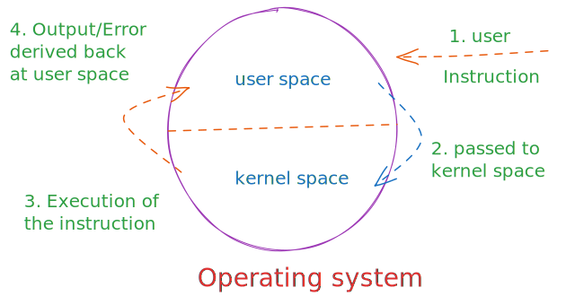
Kernel
- Kernel is the engine of the operating system
- Features of an OS like
- Stability
- Reliability
- Flexibility
- Security
- Performance
- Hardware Support
- Software Support
- Architecture
- This all depends on kernel
- If kernel crashes, the entire OS will crash.
info
Any Company when they make Operating system they will first make the kernel and after testing everything they will then build the OS
Linux
- Linux was made by Linus Torvalds in 1991
- Linux is just a Kernel.
- Linux has only Kernel space and no user space.
- Also, Linux is not a type of Unix.
- Linux is an independent, Unix like Kernel.
- Software companies like Redhat, Suse, Canonical (Ubuntu), etc. create user space on top of Linux Kernel and convert it into an Operating System.
- Redhat Linux is an OS, but Linux is just a Kernel.
- Latest Stable Redhat Linux version is RHEL 9.x with Kernel version 5.x
- Also in smartphones we have Android Operating System with Linux Kernel.
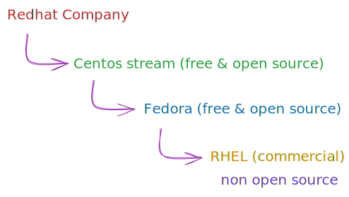
→ Redhat provides Subscription based product with 24/7 Vendor help/ Support with Official Update.
→ Linux Distros like centos & Fedora are community based which is not provided by Redhat
→ 80% of Companies use Redhat as their core servers and if they want to reduce some costs they use free Linux based Operating System (not on there core servers)
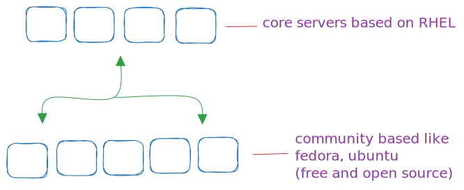
Linux Versions
Kernel development and versions release is handled by Open Source Community

Storage
- Data is stored physically on hard drives and other storage devices
- We need to access data logically from storage device via operating system
- Every operating system has a logical access point to access storage devices
- This access points are called mount points
- In windows operating system, mount points are in the form of drive letters
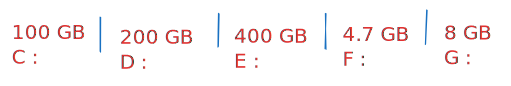
- Linux does not support drive letters
- In Linux empty directories can be used as mount points
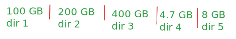
- When we install operating system on a hard drive, a default directory structure gets created that contains various system files and can also be used to store user data.
- This default directory structure is called a file system.
- Windows file system start from
C: driveand contains directories like windows, program files and users - Since there is no drive letter support in Linux, Linux directory structure starts from a directory called slash directory
/ /is the root directory of Linux file system.- All other files & directories always fall inside
/directory. - Various Linux directories that fall directly under
/directory includeboot,dev,var,usr,lib,etc,proc,home,root
for better understanding see below diagram
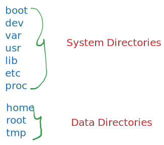
Partition Layout
There are two types of partition layout
Single Partition Layout
- Entire Filesystem is created on a single partition.
- Drawback is that if the partition is corrupted, then all system and user data is lost.
- Suitable for R&D servers
Multiple Partition Layout
/becomes the main system partition and while we haveetc,usr,lib,proc,root,tmpanddevdirectories on itselfboot,homeandvarcan be declared as mount points of separate partitions
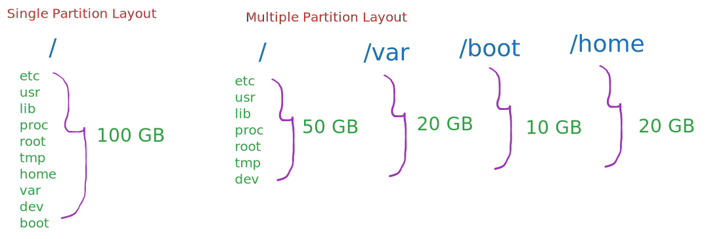
Swap Partition
- In Linux there is a special partition called swap partition in other words it is virtual memory. It is also known as paging process in windows.
- It provides extra RAM to the system.
- For example if there is 4gb RAM in the system and all the processes are full (RAM is full) then the system (RAM) borrows some space from the storage and that storage acts as a RAM.
- It is a temporary RAM
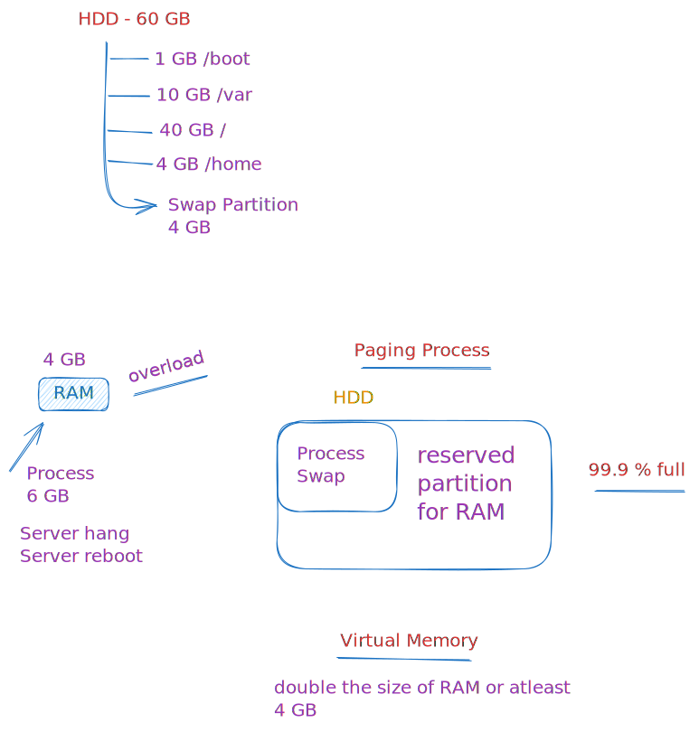
Virtualization
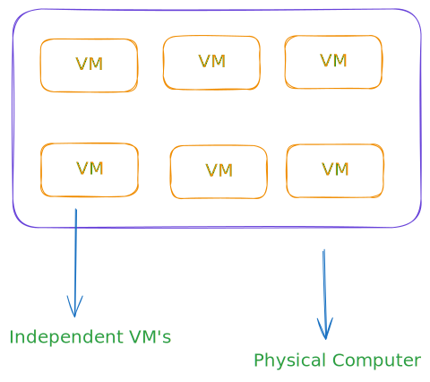
Hypervisor software :- Create Virtual Machine
There is one physical computer inside that physical computer there can be multiple virtual machines every virtual machines can control different operating system.
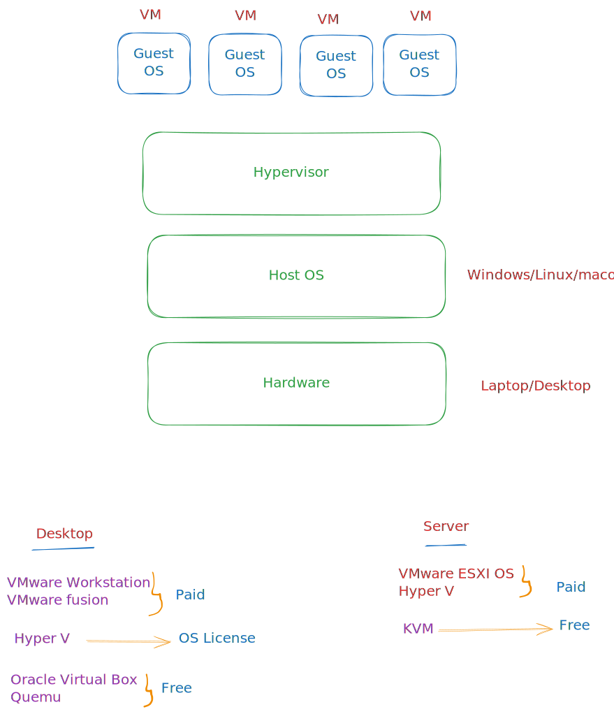
Linux Access modes
- GUI for desktop purpose
- CLI for server purpose
- From RHEL 7 Redhat introduced 1st ever "Web UI" mode to manage Linux servers In-built cockpit service is used to provide web UI access
systemctl enable --now cockpit.socketcommand is used to enable cockpit- Client can use
https://<serverip>:9090url to access WebUI of server - We can also download cockpit in another Linux distros
Terminals
- In Linux login screens are called Terminals
- There are two types of terminals :
- GUI
- CLI
- There are total 6 Local Terminals on RHEL (this applies for all other daily driver linux distro)
- If Graphics is ON → 1 GUI & 5 CLI
- If Graphics is OFF → 6 CLI
- "ctrl + alt + fn key" is used to switch between local terminals
- If Graphics is ON → f1 for GUI and f2.......f6 CLI
- If Graphics is OFF → f1......f6 CLI
- Multiple CLI terminals for running parallel tasks
info
as of my experience the gui can be any from f1 to f6
Tmux
Open Multiple tabs inside a single CLI terminal
- tmux application lets us open multiple tabs inside a single terminal
- tmux command is used to start tmux tool
- press and release
ctrl + band then presscto open a new tab in tmux - press and release
ctrl + band then tap number to jump on a tab in tmux (e.g 1,2,3) - After entering into tmux there will be a blue line in bottom inside that blue line the ( * ) asterisk symbol represent current tab and ( - ) symbol represent previous tab.
- On GUI terminal, after login we get desktop
- On CLI teminal, after login we get shell
Shell is the interactive program that listens to our commands, pass to kernel space and return output/error on screen
How does a operating system works version 2.0
First user will give instruction to user space through shell then the shell will pass the instruction to kernel space execution of the instruction will happen in kernel space and after that kernel will give the output/error to user space
Types of shell :- 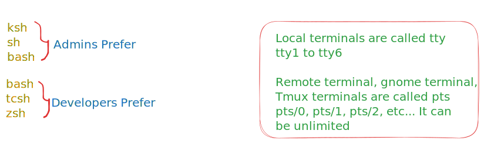
Data Center
- Data Center is nothing but huge server rooms
- We have to make local (physical) server strong
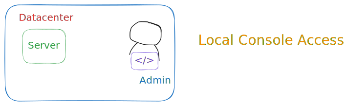
Remote Access
Accessing servers over the network using applications like telnets and SSH
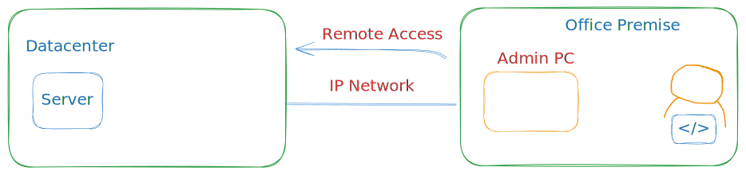
CLI over GUI mode
- Accessing Linux command-Line on graphical terminal
- Gnome terminal application is used
- Multiple tabs can be opened on a single gnome terminal
ctrl + shift + tis used to open gnome tabs.